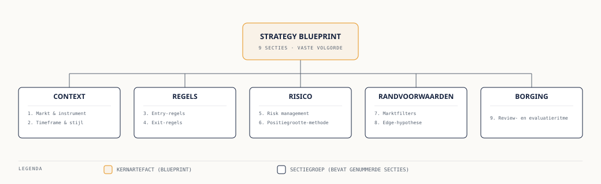

Cursus Systematisch Traden · Niveau 2 (Systematisch) · Deel 12 van 30
Het strategy blueprint-concept Negen secties, geen interpretatieruimte.
Fenna's edge-hypothese uit deel 11 is nog te vaag om mee te werken. In dit deel leert u het strategy blueprint — een vast sjabloon van negen secties waarin een strategie zo expliciet wordt vastgelegd dat er geen ruimte meer overblijft voor interpretatie. Aan de hand van Fenna's eerste blueprint ziet u precies wat elke sectie moet bevatten, en wanneer een blueprint "compleet genoeg" is.
5secties
±40 minleestijd + werkboek
4controlevragen
N2Systematisch
Disclaimer. Deze cursus is educatieve content, geen financieel advies. Fenna's blueprint is een illustratief voorbeeld, geen aanbeveling om deze specifieke regels zelf toe te passen — elke strategie moet u zelf doordenken en toetsen voordat u er ooit echt geld mee inzet. Trading kent verliesrisico tot en met het volledige verlies van de inzet, en bij hefboomproducten kan het verlies groter zijn dan de inzet. Er wordt geen rendement gegarandeerd.
In deel 11 formuleerde Fenna haar eerste edge-hypothese: trades die ze nam na een correctie richting een belangrijk gemiddelde, leken beter te lopen dan impulsieve instappen. Dat is een goed begin, maar het is nog geen strategie waarmee je kunt werken. "Na een correctie richting een gemiddelde" is vaag genoeg om op tien verschillende manieren te worden ingevuld, en dat is precies het probleem: als de regels ruimte laten voor interpretatie, verandert de strategie elke keer een beetje mee met de stemming van de trader op dat moment. Daarmee is hij niet meer systematisch, en dus ook niet te backtesten of te evalueren.
Een strategy blueprint is het instrument om dat op te lossen: een vast sjabloon met negen secties waarin een strategie zo expliciet wordt vastgelegd dat er geen interpretatieruimte meer overblijft. Niet omdat trading in werkelijkheid volledig mechanisch is — er komt altijd beoordelingsvermogen bij kijken, bijvoorbeeld bij het kiezen welke aandelen op de watchlist staan — maar omdat een blueprint de kern van de beslissing (wanneer in, wanneer uit, hoeveel) onttrekt aan het gevoel van de dag.
02
De negen secties van een blueprint
⏱ 12 min
Elke blueprint in deze cursus bestaat uit dezelfde negen secties, in dezelfde volgorde. Dat is bewust: een vaste structuur maakt het mogelijk om later meerdere blueprints naast elkaar te leggen (deel 21) zonder dat u telkens opnieuw moet uitzoeken waar iets staat.

Figuur 12-1 — De negen secties van een strategy blueprint
1. Markt & instrument. Op welke markt en welk type instrument is de strategie van toepassing? Niet "aandelen" in het algemeen, maar specifiek genoeg om een watchlist mee samen te stellen: bijvoorbeeld large-cap aandelen en ETF's genoteerd op Europese en Amerikaanse beurzen, met een minimale gemiddelde dagomzet zodat in- en uitstappen praktisch uitvoerbaar blijft.
2. Timeframe & stijl. Op welk timeframe wordt de setup beoordeeld (bijvoorbeeld de daggrafiek), en wat is de beoogde houdperiode (bijvoorbeeld één tot drie weken — een swingtrade, geen daytrade en geen langetermijnbelegging)? Dit bepaalt ook hoe vaak de trader daadwerkelijk naar de markt hoeft te kijken.
3. Entry-regels. De precieze, toetsbare voorwaarden waaronder een positie wordt geopend. Niet "als het er sterk uitziet", maar bijvoorbeeld: "de slotkoers sluit voor het eerst in tien handelsdagen weer boven het 50-daags voortschrijdend gemiddelde, na een correctie van minimaal 5% vanaf een recent hoogtepunt."
4. Exit-regels. Los van de stop-loss (die in risk management staat, sectie 5) horen hier de regels voor een reguliere winstneming of een tijdgebonden exit: bijvoorbeeld "sluit de positie na een koersdoel van +8%, of uiterlijk na drie weken als geen van beide doelen is geraakt."
5. Risk management. Hoeveel wordt er ingezet per trade, en met welke methode? Dit is waar de sizing-methodes uit deel 14 concreet worden: fixed fractional, Kelly of ATR-based, met een vast risicopercentage per trade.
6. Positiegrootte-methode. Een aparte sectie naast risk management, omdat de gekozen sizing-methode expliciet gedocumenteerd moet worden inclusief de precieze parameters (bijvoorbeeld: fixed fractional met 1% risico per trade, of half-Kelly op basis van de laatste vijftig trades).
7. Marktfilters. Onder welke bredere marktcondities wordt de strategie wel of juist niet toegepast? Bijvoorbeeld: alleen setups nemen wanneer de bredere index (zoals een brede aandelenindex) zelf niet in een duidelijke neerwaartse trend zit — een filter die voorkomt dat de strategie tegen de stroom in blijft zwemmen.
8. Edge-hypothese. De expliciete, geschreven verwachting waaróm deze strategie een structureel voordeel zou moeten hebben. Voor Fenna: "aandelen die na een gezonde correctie het gemiddelde heroveren, trekken vaak kortetermijnkopers aan die de koers voor enkele weken verder duwen, terwijl impulsieve instappen op sterke candles vaak al uitgekocht momentum kopen."
9. Review- en evaluatieritme. Hoe vaak wordt de blueprint zelf tegen het licht gehouden: elke maand de resultaten doornemen, elk kwartaal de regels heroverwegen? Deze sectie voorkomt dat een blueprint eenmaal wordt geschreven en daarna nooit meer wordt getoetst aan de werkelijkheid — de koppeling met journaling (deel 18) wordt hier al gelegd.
Controlevraag
Uit Werkboek deel 12, Opdracht 1
1Noem de negen secties van een strategy blueprint, in de juiste volgorde, en geef bij elk in één zin aan wat de sectie beantwoordt.Toon antwoord
1. Markt & instrument — op welke markt en welk type instrument is de strategie van toepassing? 2. Timeframe & stijl — op welk timeframe wordt beoordeeld, en wat is de beoogde houdperiode? 3. Entry-regels — onder welke precieze voorwaarden wordt een positie geopend? 4. Exit-regels — onder welke precieze voorwaarden wordt een positie regulier gesloten? 5. Risk management — hoeveel wordt ingezet per trade? 6. Positiegrootte-methode — met welke sizing-methode en welke exacte parameters? 7. Marktfilters — onder welke bredere marktcondities wordt de strategie wel/niet toegepast? 8. Edge-hypothese — waarom zou deze strategie een structureel voordeel moeten hebben? 9. Review-ritme — hoe vaak wordt de blueprint zelf geëvalueerd?
2Opdracht 2 — Vaag of expliciet? Beoordeel per formulering of hij expliciet genoeg is voor een blueprint, of nog te vaag, en herschrijf de vage formuleringen zo dat ze wél toetsbaar worden: (1) "Ik stap in als het momentum sterk aanvoelt." (2) "Slotkoers sluit voor het eerst in tien handelsdagen boven het 50-daags gemiddelde." (3) "Ik neem wat minder risico als de markt onrustig is." (4) "Winstdoel +8%, of uiterlijk sluiten na 15 handelsdagen."Toon antwoord
1. Te vaag — "aanvoelt" is niet toetsbaar. Herschrijving bijvoorbeeld: "ik stap in als de koers drie opeenvolgende dagen hoger sluit met een dagvolume boven het 20-daags gemiddelde volume." 2. Expliciet — een concreet, toetsbaar criterium met een vast getal. 3. Te vaag — "wat minder" en "onrustig" zijn niet gekwantificeerd. Herschrijving bijvoorbeeld: "risico per trade daalt van 1% naar 0,5% zodra de 14-daagse ATR van het instrument boven 4% van de koers ligt." 4. Expliciet — twee heldere, meetbare exitcondities.
03
Fenna's eerste blueprint
⏱ 8 min
Om de negen secties concreet te maken, hier Fenna's eerste blueprint zoals ze die na deel 11 optekende. Dit voorbeeld loopt als casus door de rest van niveau 2 heen.
Sectie
Fenna's invulling
1. Markt & instrument
Large-cap aandelen en ETF's, Europese en Amerikaanse beurzen, gemiddelde dagomzet ruim voldoende om zonder noemenswaardige slippage in en uit te stappen
Slotkoers sluit voor het eerst in tien handelsdagen boven het 50-daags gemiddelde, na een correctie van minimaal 5% vanaf een recent hoogtepunt
4. Exit-regels
Winstdoel +8%, of uiterlijk na 15 handelsdagen sluiten als geen van beide doelen is bereikt
5. Risk management
Fixed fractional, 1% risico per trade (uitwerking in deel 14)
6. Positiegrootte-methode
Fixed fractional als hoofdmethode; ATR-based als kruiscontrole bij hoog-volatiele aandelen
7. Marktfilters
Geen nieuwe entries wanneer de brede markt drie weken op rij een neerwaartse trend laat zien
8. Edge-hypothese
Herovering van het gemiddelde na een gezonde correctie trekt kortetermijnvraag aan; impulsieve instappen op sterke candles doen dat vaak al te laat
9. Review-ritme
Maandelijkse doorloop van alle trades in het logboek; kwartaalevaluatie van de regels zelf
Let op wat hier nog ontbreekt: een getoetste win rate, een profit factor, een expectancy. Dat is bewust. Deze blueprint is op dit moment een hypothese die klaar staat om getoetst te worden — niet iets waarvan al vaststaat dat het werkt. Deel 16 (backtesting) gaat precies over die volgende stap.
Controlevraag
Uit Werkboek deel 12, Opdracht 4
1Waarom bevat Fenna's eerste blueprint nog geen win rate, profit factor of expectancy? Wat zou het betekenen als een blueprint die cijfers wél al bevatte, voordat er getoetst is?Toon antwoord
Een pas geschreven blueprint is een hypothese, geen bewezen systeem — de cijfers ontstaan pas na een backtest of na voldoende live/paper trades (deel 16). Zou een blueprint bij het eerste opschrijven al met concrete winrate- of rendementscijfers komen, dan is dat een teken dat de cijfers verzonnen of voorbarig zijn, of dat de blueprint stiekem al is aangepast op basis van bekende resultaten — precies het soort overfitting waar deel 16 voor waarschuwt.
2Opdracht 3 — Uw eigen eerste blueprint (toepassing, 30-40 minuten). Gebruik de edge-hypothese die u in deel 11, opdracht 3, formuleerde. Schrijf op basis daarvan uw eigen eerste blueprint, met alle negen secties ingevuld zoals in Fenna's voorbeeld hierboven.Toon antwoord
Individuele, open opdracht. Toets uw eigen resultaat aan drie criteria: (1) zijn alle negen secties ingevuld, ook risk management en review-ritme, die vaak worden overgeslagen; (2) zou een ander die uw blueprint leest, op dezelfde marktdata tot dezelfde beslissing komen; (3) staat de edge-hypothese er expliciet en apart in, los van de entry-regels zelf? Vergelijk uw resultaat eventueel met Fenna's voorbeeld hierboven als referentiepunt voor het detailniveau dat wordt verwacht.
04
Wat maakt een blueprint "compleet genoeg"
⏱ 6 min
Een blueprint hoeft niet perfect te zijn voordat hij bruikbaar is, maar elke sectie moet wél zo geschreven zijn dat een ander die de blueprint leest, zonder ruggespraak met u tot dezelfde beslissing zou komen bij dezelfde marktdata. Een goede toets: lees elke regel hardop voor en vraag u af "zou ik hier op twee verschillende dagen hetzelfde antwoord op geven?" Zodra het antwoord "dat hangt ervan af" is, is de regel nog niet expliciet genoeg.
Veelvoorkomende zwakke plekken
Vage formuleringen in de entry-regels ("als het momentum sterk is"), het ontbreken van een concreet getal bij marktfilters ("als de markt niet te negatief is"), en een positiegrootte-methode die wel genoemd wordt maar niet met exacte parameters — bijvoorbeeld "ik doe wel wat kleiner bij onrustige markten" in plaats van een vast percentage of een vaste formule.
05
Disclaimer
⏱ 2 min
Disclaimer
Deze cursus is educatieve content, geen financieel advies. Fenna's blueprint is een illustratief voorbeeld, geen aanbeveling om deze specifieke regels zelf toe te passen — elke strategie moet u zelf doordenken en toetsen voordat u er ooit echt geld mee inzet. Trading kent verliesrisico tot en met het volledige verlies van de inzet, en bij hefboomproducten kan het verlies groter zijn dan de inzet. Er wordt geen rendement gegarandeerd.
Samengevat: een strategy blueprint legt een strategie vast in negen vaste secties, zodat er geen interpretatieruimte overblijft in de kernbeslissingen. Fenna's eerste blueprint zet haar edge-hypothese uit deel 11 om in negen expliciete, toetsbare keuzes — maar blijft een hypothese totdat hij is getoetst. De volgende stappen in niveau 2 (indicatoren, risk management, backtesting) bouwen daarop voort.
Verder naar deel 13
Deel 13: indicatoren verdieping — RSI, MACD, ATR en Bollinger Bands als hulpmiddel binnen de blueprint.